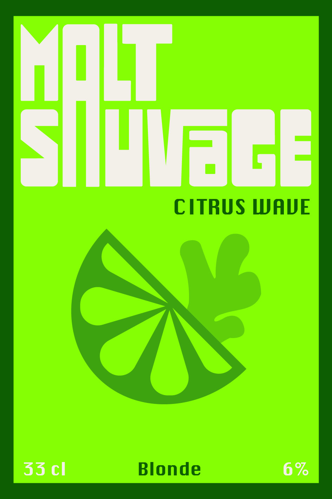
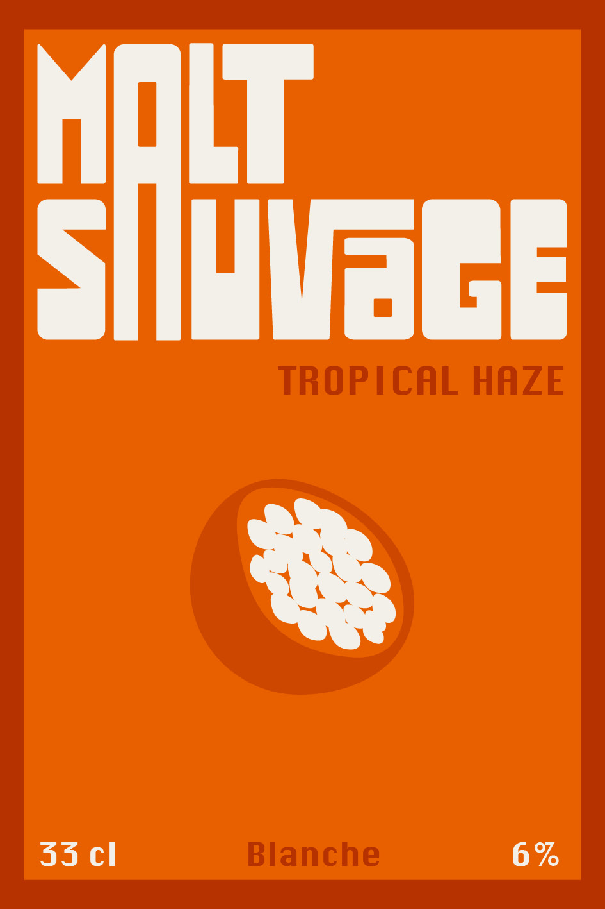
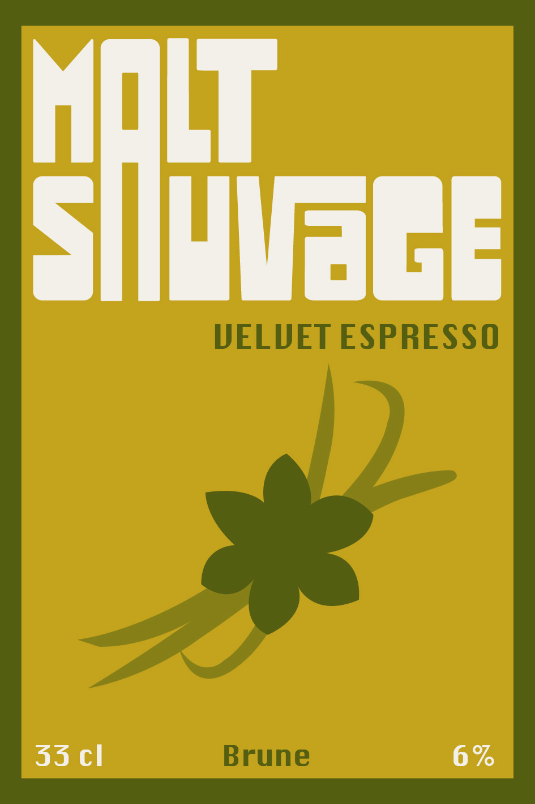
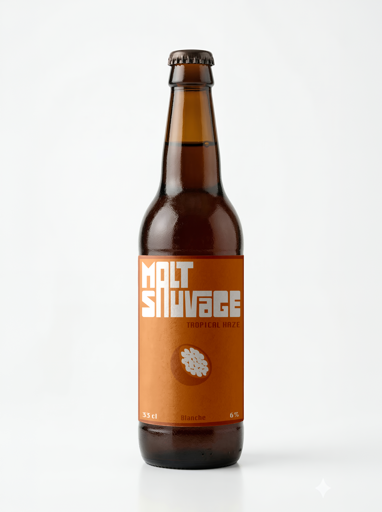
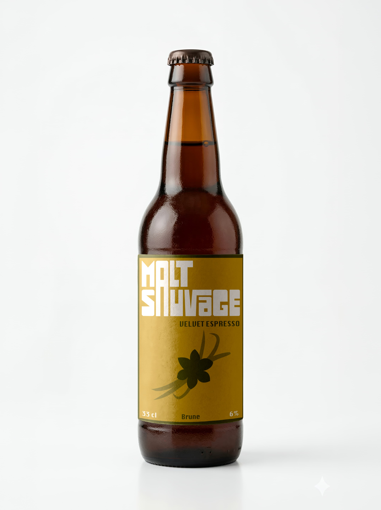

Malt Sauvage
Branding - Illustrator - Indesign






Projet de cours. Le projet Malt Sauvage est une création d'identité visuelle et de packaging réalisée sur Illustrator et InDesign pour une brasserie artisanale fictive lançant une gamme de bières craft (blonde, blanche et brune). L'objectif : concevoir des étiquettes percutantes et cohérentes qui racontent l'histoire de la marque, distinguent chaque recette par ses saveurs et respectent les contraintes techniques et informatives du packaging (volume, taux d'alcool, type de bière). Identité & gamme : la collection décline un logotype massif et graphique sur trois références — Citrus Wave (blonde citron vert et gingembre), Tropical Haze (blanche mangue et fruit de la passion) et Velvet Espresso (brune café espresso et vanille) — chacune associée à une illustration dédiée à ses ingrédients. Palette chromatique : chaque référence adopte une teinte dominante franche — vert vif pour Citrus Wave, orange soutenu pour Tropical Haze et doré/olive pour Velvet Espresso — afin d'offrir une lecture immédiate tout en maintenant une forte unité de gamme. Packaging & mise en situation : les créations ont été pensées pour l'impression et mises en valeur sur des bouteilles en verre, alliant visuels graphiques marqués, hiérarchie claire des informations et réalisme en situation.